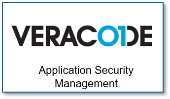
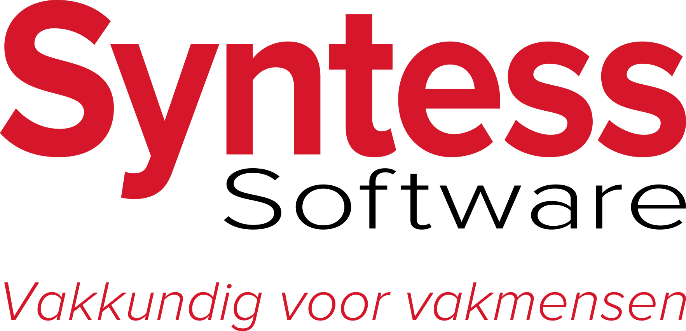
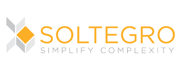

Conneqtech is een bedrijf wat een systeem maakt wat zich verbindt met elektrische fietsen. Het geeft informatie over de fiets zelf en ook over de route die gereden is en waar er bijvoorbeeld dealers zijn waar de fiets gemaakt kan worden.
Contactgegevens:
E-mail: info@conneqtech.com
Telefoonnummer: 033 205 3400

Veracode is een bedrijf dat veel doet aan security voor applicaties. Veracode is heel internationaal en doen veel online zo zitten er in een team veel verschillende mensen uit veel verschillende landen. Ze doen vooral in software kijken voor zwakke plekken waar hackers binnen zouden kunnen komen. Ze zijn dus eigenlijk ethische hackers. Er zijn verschillende rollen in veracode, zoals mensen die zich bezig houden met research, maar vooral web security consultants. Technieken die ze gebruiken zijn XSS, SQLi en CSRF.
Contactgegevens twitter: nielstanis
Veracode is een bedrijf dat veel doet aan security voor applicaties. Veracode is heel internationaal en doen veel online zo zitten er in een team veel verschillende mensen uit veel verschillende landen. Ze doen vooral in software kijken voor zwakke plekken waar hackers binnen zouden kunnen komen. Ze zijn dus eigenlijk ethische hackers. Er zijn verschillende rollen in veracode, zoals mensen die zich bezig houden met research, maar vooral web security consultants. Technieken die ze gebruiken zijn XSS, SQLi en CSRF.
Contactgegevens twitter: nielstanis

YourSuprise is een webshop waar je gepersonaliseerde cadeautjes kunt kopen. Het is een erg informeel bedrijf, ze maken veel professionele machines en software, maar met elkaar zijn ze een grote familie. Alles wat ze hebben qua producten zoals de site en de machines is de software zelf ontworpen. Ook gebruiken ze veel van de data die ze verzamelen van klanten om de gebruikservaring voor elk zo persoonlijk mogelijk te maken. Ook analyseren ze hun eigen data om voordeel te hebben in de toekomst door te weten wanneer de pieken zijn in de verkoop.
Rollen worden niet per defenitie uitgedeeld, want wanneer iedereen een rol krijgt werken ze alleen met dat doel voor ogen. Als er dan een rol moet worden gegeven zien ze het liefst iedereen als software engineer.
Contactgegevens CTO: arne@yoursurprise.com

Syntess is een bedrijf wat software voor andere bedrijven maakt om voor hen het werken gemakkelijker te maken. Ze zijn er van overtuigd dat ze erg efficient werken, daarnaast zijn ze er trots op dat ze een Nederlandse Sportvrouw mogen sponsoren. Dit straalt ook iets uit van hun ambitie.
Over hun werksfeer zeggen ze dit: De bedrijfscultuur zou je kunnen omschrijven als collegiaal, professioneel, open, flexibel en betrouwbaar, waarbij plezier in het werk de basis vormt.
Contactgegevens:
info@syntess.nl
088 40 80 400
Syntess is een bedrijf wat software voor andere bedrijven maakt om voor hen het werken gemakkelijker te maken. Ze zijn er van overtuigd dat ze erg efficient werken, daarnaast zijn ze er trots op dat ze een Nederlandse Sportvrouw mogen sponsoren. Dit straalt ook iets uit van hun ambitie.
Over hun werksfeer zeggen ze dit: De bedrijfscultuur zou je kunnen omschrijven als collegiaal, professioneel, open, flexibel en betrouwbaar, waarbij plezier in het werk de basis vormt.
Contactgegevens:
info@syntess.nl
088 40 80 400

Soltergro is een bedrijf wat een inginieursbureau en een automatiseringsbureau is, of zoals ze zelf zeggen:
WIJ ZIJN EEN AUTOMATISERINGS- EN INGENIEURSBUREAU. SPECIALIST IN HET INTEGRAAL EN MULTIDISCIPLINAIR ONTWERPEN VAN SYSTEMEN EN ONTWIKKELEN VAN SOFTWARE.
Over de werksfeer hebben ze het volgende te zeggen:Betrokkenheid, creativiteit en doorzettingsvermogen zijn een vereiste om innovatieve en werkbare oplossingen te ontwikkelen die een significante bijdrage leveren aan de doelstellingen van onze klanten.
ze zijn dus erg gericht op resultaat.
Contactgegevens:
+31 (0)10 202 26 60
INFO@SOLTEGRO.NL
Soltergro is een bedrijf wat een inginieursbureau en een automatiseringsbureau is, of zoals ze zelf zeggen:
WIJ ZIJN EEN AUTOMATISERINGS- EN INGENIEURSBUREAU. SPECIALIST IN HET INTEGRAAL EN MULTIDISCIPLINAIR ONTWERPEN VAN SYSTEMEN EN ONTWIKKELEN VAN SOFTWARE.
Over de werksfeer hebben ze het volgende te zeggen:Betrokkenheid, creativiteit en doorzettingsvermogen zijn een vereiste om innovatieve en werkbare oplossingen te ontwikkelen die een significante bijdrage leveren aan de doelstellingen van onze klanten.
ze zijn dus erg gericht op resultaat.
Contactgegevens:
+31 (0)10 202 26 60
INFO@SOLTEGRO.NL
| Onderzochte bedrijven | |
|---|---|
| Bedrijf 1 | Conneqtech |
| Bedrijf 2 | VERACODE |
| Bedrijf 3 | YourSuprise |
| Bedrijf 4 | Syntess |
| Bedrijf 5 | Soltegro |